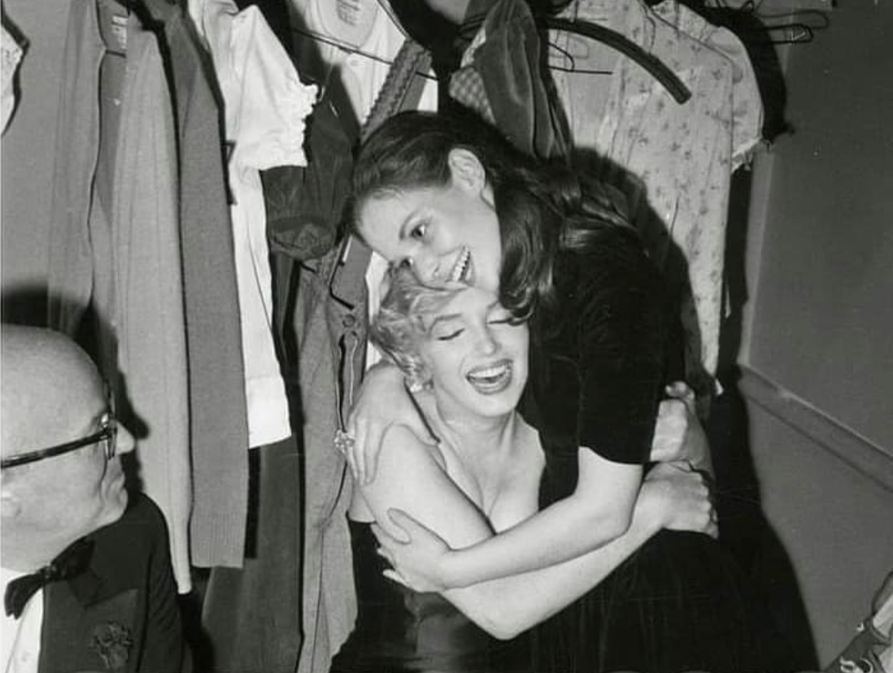
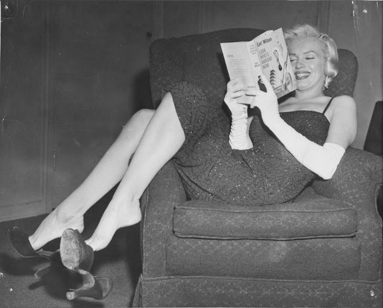
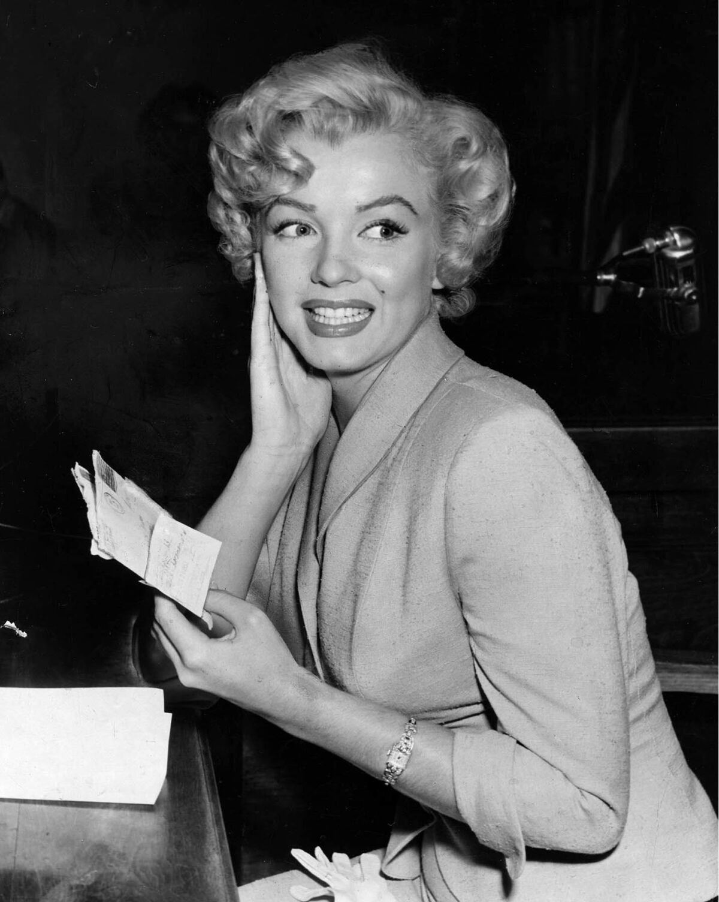
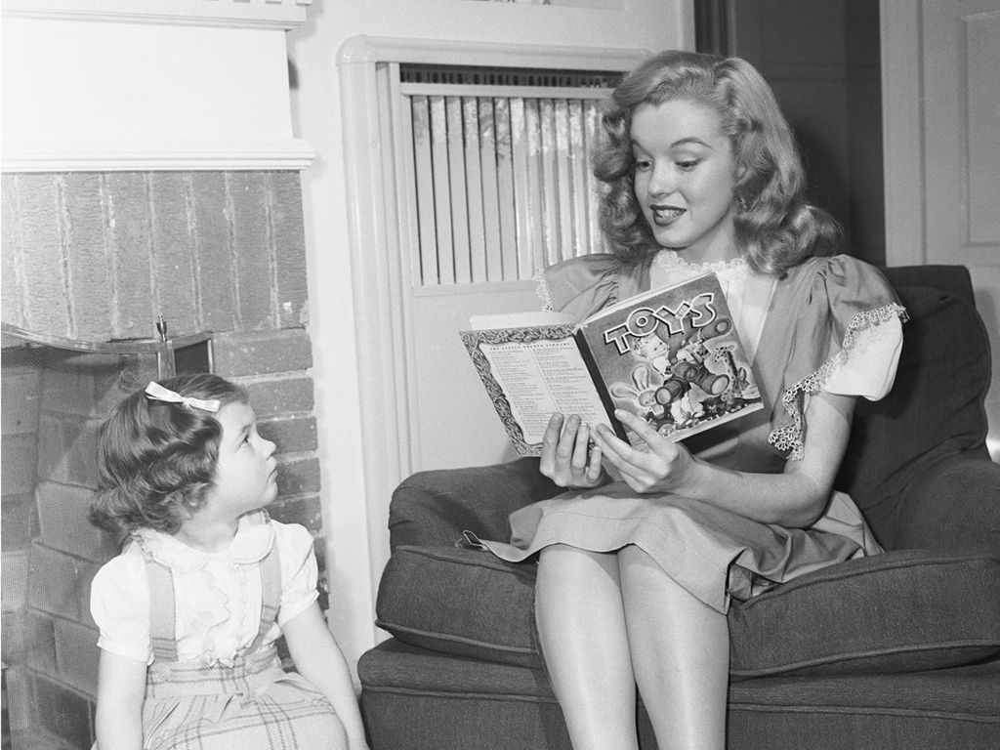
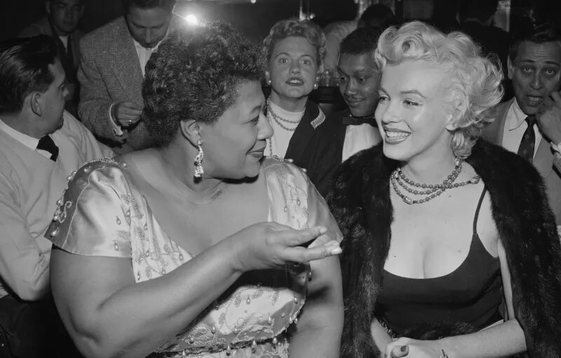

8 INTERESTING FACTS ABOUT MARILYN MONROE
In the 1950s and 1960s, Marilyn Monroe, an American actress, singer, model, and sex icon, starred in several movies. Her captivating words, sensuality, and attractiveness mesmerized the audiences. However, there is more to her than we know of from the screen, here are 8 interesting facts about Marilyn Monroe that you may not know about!
1. THE STAGE NAME MARILYN MONROE WAS NOT HER FIRST CHOICE
Monroe, also known as Norma Jeane Dougherty then (Was known as Norma Jeane Baker before marrying her
husband, James Dougherty) signed a contract with 20th Century Fox, an American film studio. Then when it was time
to choose a stage name for her, studio executive Ben Lyon sugguested that she use the stage name Marilyn Monroe.
Monroe's first choice was originally Jean Adair, but the name Marilyn Monroe was chosen after much consideration
from Lyon.
Lyon wanted Monroe to have a shorter name with more flair, hence he came up with the name Marilyn.
Lyon came up with it as Monroe reminded him of Marilyn Miller, the Ziegfeld Follies BroadWay musical star who
starred with him and W.C. Fields in Her Majesty, Love. (Miller and Lyon were also thought to have been romantically
involved at one point) There were multiple points of similarity between the two stars as well, they were both blonde
and had complicated personal lives, including failed marriages.
For the name Monroe, it was decided as it was the
maiden name of Monroe's mother, and that the two M's, Marilyn Monroe, have a nice ring to it.
The choices for
Monroe's stage name continued to pile up as her friend suggested other stage names such as Clare Norman, Meridith,
and even Carol Lind.
2. MARILYN MONROE OFTEN REFERRED TO "MARILYN" IN THIRD PERSON

Marilyn Monroe, the popular actress of Hollywood seems to have an inner switch that she flips to
turn "Marilyn" on and off whenever she wants to.
In one of the recounts, Susan Strasberg was walking with Monroe
when they noticed a group of fans waiting for Marilyn's return at the Waldorf. Monroe asked Strasberg "Do you want
to see me be her?" Monroe left Strasberg in a state of confusion as she made some inner adjustments, seemingly to
"turn on" the switch inside her before presenting herself to the public. She stated "there she was — not the simple
girl I'd been strolling with, but 'Marilyn Monroe', resplendent, ready for her public."
There are other recounts of
such an event as well with Actor Eli Wallach and photographer Sam Shaw, where they have witnessed Monroe referring to
Marilyn in third person. Shaw frequently overheard her criticizing "Marilyn's" acting in films or during photo shoots,
saying things such as,"She wouldn't do this. Marilyn would say that."
3. THE WARDROBE OF MARILYN MONROE IS WORTH A FORTUNE
To celebrate President John F.Kennedy's birthday on May 19, 1962, Monroe wore a flesh-coloured sheer,
sprangled dress that was embedded with jewels to deliver the president a sultry "Happy birthday" serenade.
The dress
was later put up for auction by the widow of Monroe's acting coach, Lee Strasberg in 1999. It sold for a grand total
of $1,267,500 to a Manhattan-based collectible company. When the reporters asked the president, Robert Schargen, why
he would pay a huge sum for a piece of clothing, that was originally $12,00, he simply proclaim that he would have paid
twice of that if he had to, and even boasted saying "We stole it".
Another popular dress that was sold for a high
price was the white dress worn by Monroe in the 1955 film, The Seven Year Itch.
The white dress was originally part
of a collection of film memorabilia collected by actress Debbie Reynolds for over four decades. It was put up for
auction by Reynolds as one of the Hollywood Memorabilia and was sold for $4.6m at an auction in Los Angeles during
the year of 2011.
4. MARILYN MONROE WAS WELL-READ

At the passing of Monroe, she had owned an increadible amount of books that goes over 400 volumes, including several first editions. A director that once found her reading R.M Rilke's Letters to a Young Poet, he asked her how she chose it, and she replied "[On] nights when I've got nothing else to do I go to the Pickwick bookstore on Hollywood Boulevard," , "And I just open books at random — or when I come to a page or a paragraph I like, I buy that book. So last night I bought this one. Is it wrong?"
5. MARILYN MONROE SHORTEN HER HONEYMOON TO ENTERTAIN THE TROOPS
In the early years of World War II, Monroe was a teenaged housewife named Norma Jeane Dougherty.
During the war, she went to work in a factory that made military drones. There, she was discovered by a
photographer searching for subjects to inspire the troops. Monroe became a model and went on to take risqué
pin-up photos that would be hugely popular with soldiers in Korea. After she'd transformed into an actress called
Marilyn Monroe, army publication Stars & Stripes dubbed her "Miss Cheesecake of 1951" as her film career was taking
off.
In February 1954, Monroe showed her appreciation for these admirers by calling off her honeymoon with second
husband Joe DiMaggio to visit military personnel in Korea. She performed a routine that had her onstage wearing
a shimmering purple outfit, and it was very popular. Despite the frigid conditions that led to her pneumonia,
she performed ten gigs in four days. The event, as Monroe subsequently remarked, "was the best thing that ever
happened to me. I never felt like a star before in my heart."
6. MARILYN MONROE ADVOCATED FOR CIVIL RIGHTS

It wasn't just during her marriage to Miller, which ended in divorce in 1961, that Monroe developed her political awareness. Along with his former roommate Shelley Winters, Monroe participated in demonstrations against the erosion of civil liberties brought on by anti-Communist passion. On a movie set, she was reportedly reprimanded for reading a "radical" biography of muckraker Lincoln Steffens. Raised to adopt more progressive racial beliefs, Monroe went on to support civil rights.Monroe was chosen to serve as an alternative delegate to the Connecticut state Democratic convention in 1960; however, she did not attend the convention as it was mostly an honorary post. Additionally, she once told reporters, "The H-bomb is my nightmare." Which is yours? It is therefore not surprising that she became affiliated with the Committee for a Sane Nuclear Policy's Hollywood branch. In her file from 1962, the FBI, which was still monitoring her, wrote: "Subject's views are very positively and concisely leftist; however, if she is being actively used by the Communist Party, it is not general knowledge among those working with the movement in Los Angeles."
7. MARILYN MONROE WAS EXTREMELY GENEROUS

Despite spending time in foster homes and institutions, Monroe's generosity was evident throughout her life. Giving away a priceless fur coat to an acting instructor, she also gave money to those in need. Her shopping partners would frequently discover that Monroe had sent them things that she had supposedly bought for herself. She offered support to organizations that support children, such as the Milk Fund for Babies and the March of Dimes, and was particularly giving to children.Even after Monroe's passing, the same kindness persists. Dr. Kris received a portion of Monroe's estate, although Strasberg received the majority of it. Kris left a portion of Monroe's estate to the Anna Freud Center in England in 1980. Given her personal experiences, Monroe would probably be proud to support this organization, which helps kids with mental health issues.
8. MARILYN MONROLE AND ELLA FITZGERALD WERE CLOSE FRIENDS

Ella Fitzgerald and Marilyn were good friends. Marilyn went so far as to call Fitzgerald her "very favorite person." Rumor had it that Fitzgerald's race prevented her from performing at the Mocambo Club. Fitzgerald wasn't deemed glamorous enough to perform at the club, according to later revelations from the owners, who had previously permitted Black singers like Eartha Kitt and Dorothy Dandridge to perform. When Marilyn realized this, she intervened and threatened to sit in the front row every night if Fitzgerald was allowed to play. Fitzgerald was given the opportunity to perform because it was known that Marilyn would attract a sizable audience.